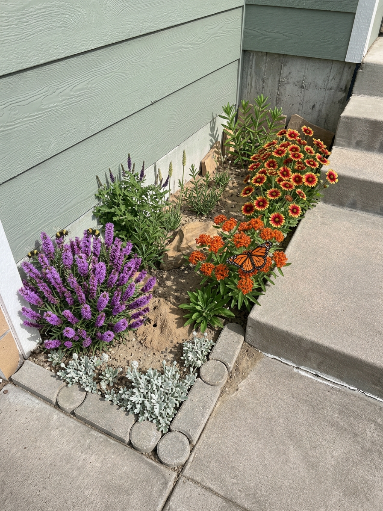
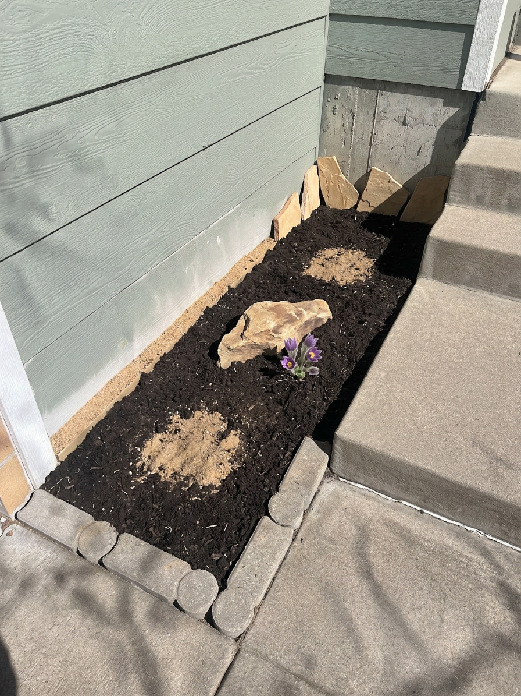
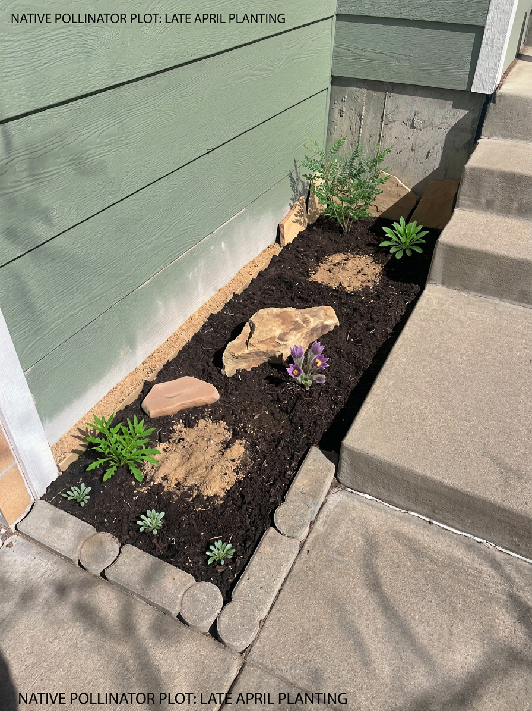
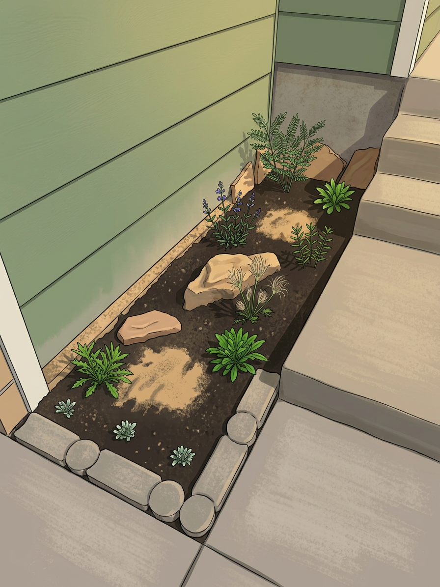
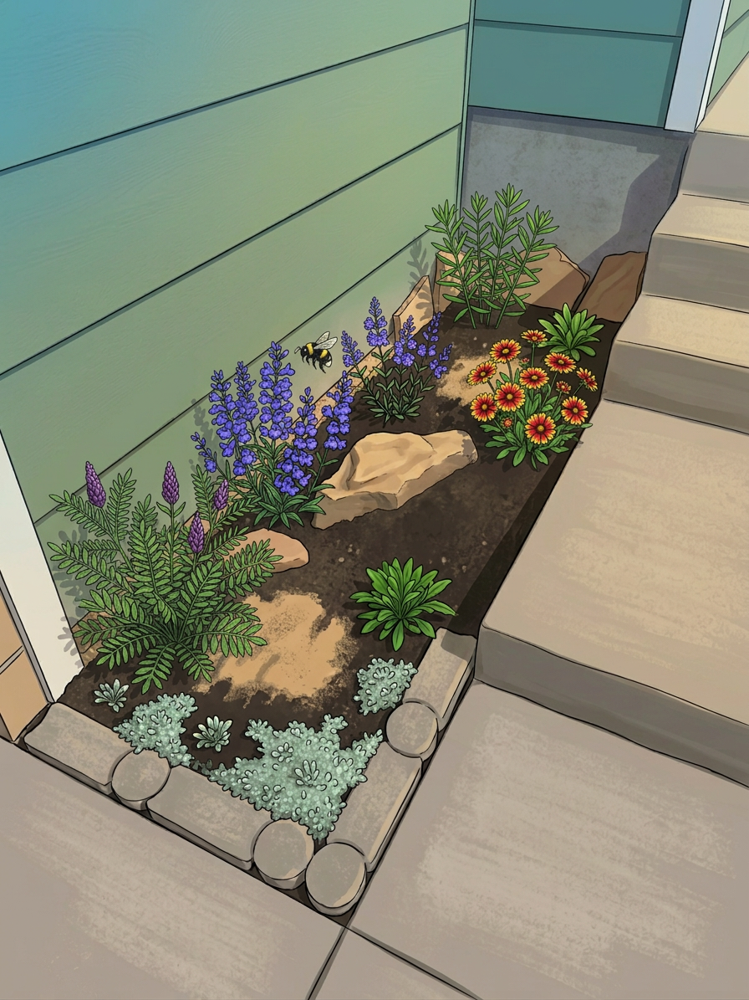
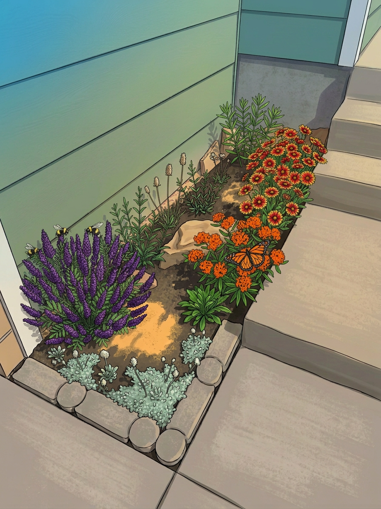

Initial Status — March 2026

Foundation bed (28 × 84 in) tucked into the house wall corner at 9736 Whitecliff Pl, Highlands Ranch, CO (39.54°N, 105.02°W, elev. 5,900 ft). Green siding forms an L-shape — the long wall (84", facing 147° SSE) runs along the left and the short wall (28", facing 237° WSW) across the top. Exposed concrete visible below the siding at top. Stairs at the upper-right, sidewalk and walkway along the right and bottom. The bed opens toward the south (147°–237° arc), receiving midday sun. Currently filled with dead weeds, old gravel, and leaf debris — a blank canvas for native planting.
Completed Vision
Year 1 — Late Summer

Year 1 late-summer rendering. Plants are still establishing — roots growing deep while tops stay modest. Lead Plant and Penstemon blooming but at roughly half their mature size. Milkweed and Blanket Flower flowering near the stairs. Bare soil visible throughout the bed — this is normal and intentional. Pussytoes plugs along the paver edge still have gaps between them. The bed looks sparse compared to a conventional garden, but the root systems are building the foundation for Year 2's dramatic growth leap.
Year 2–3 — Established

Year 2–3 rendering. Plants have doubled in size and filled their positions. Lead Plant covered in dense purple flower spikes with bumble bees. Butterfly Milkweed blooming vivid orange — watch for Monarchs. Blanket Flower in full display. Pussytoes mat has connected along the full front edge. Bare soil patches are still maintained for ground-nesting bees. The bed is now self-sustaining: nearly zero supplemental watering, continuous bloom Feb–Oct, and more ecological value per square foot than most entire yards.
Professional Site Assessment
Before planting, a professional team evaluates the site from four disciplines: microclimate, soil, drainage, and light. This foundation corner has quirks that actually favor Colorado natives — if we work with them, not against them.
Microclimate: Foundation Heat Island
Concrete foundation and siding absorb solar radiation during the day and re-radiate heat at night. This corner runs 5-10 degrees F warmer than open yard, effectively bumping the site from Zone 5b to Zone 6a-6b. At 5,900 ft elevation, UV intensity is ~18% higher than sea level, partially compensating for fewer direct sun hours. This extends the growing season by 2-3 weeks on each end and protects against late spring freezes. All selected species tolerate heat — several prefer it.
Soil: Compacted, Alkaline, Lean
Photo shows compacted soil with gravel and construction debris mixed in. Concrete foundation leaches calcium carbonate, pushing pH to 7.5-8.5 (alkaline). Organic matter is very low. This is actually ideal for Colorado Front Range natives — they evolved in lean, alkaline, rocky soil. Resist the urge to create "rich garden soil" with heavy compost. Only light amendment needed.
Drainage & Foundation Protection
Water must drain away from the foundation — never toward it. Grade the bed surface to slope 2% minimum toward the walkway. Maintain 4-6" clearance between soil/mulch surface and bottom of siding to prevent moisture wicking into the wall. Verify no downspout discharges into this bed. Use gravel, not organic mulch, against the foundation wall for drainage.
Light: South-Facing Midday Sun
Compass-verified orientation: the bed's open arc spans 147° (SSE) to 237° (WSW) — a 90° window centered nearly due south. This means the bed receives high-intensity midday sun (~10:30 AM–4:00 PM in summer, ~11:00 AM–3:30 PM at equinox) when the sun is at its highest altitude. Estimated ~5.5 hrs direct sun at summer peak, ~4.5 hrs at equinox. The 84" SSE-facing wall acts as a solar reflector, bouncing midday light and heat back into the bed. Combined with 18% UV boost at 5,900 ft elevation, effective photosynthetic radiation approaches full-sun conditions. Morning and late-afternoon sun is blocked by the house walls — but midday sun is the highest quality light for plant growth.
Rain Shadow Warning
Roof eaves deflect rainfall away from the foundation, and prevailing W/NW winds push rain further from the wall. This bed receives an estimated 40-60% less precipitation than open ground (~7-11 in/year vs the area's 17-18 in). During the 3-4 week establishment period, you'll need to hand-water. After establishment, the drought-adapted natives won't care — but know that "an inch of rain" in the forecast may deliver almost nothing to this bed.
Geospatial & Solar Analysis
Compass-verified wall bearings and GPS coordinates (39.5391°N, 105.0158°W) provide precise sun exposure data for this bed. The house walls create a defined sun window — understanding it drives every plant placement decision.
Orientation: South-Facing Open Arc
Long wall (84") faces 147° SSE. Short wall (28") faces 237° WSW. The bed's open arc spans 147°–237° — a 90° window centered on 192° (nearly due south). This is one of the best possible orientations for a garden bed: midday sun is the highest-quality, highest-intensity light of the day.
Shadow Pattern: Midday Sun Only
The house walls block sun when the solar azimuth is outside the 147°–237° window. Morning sun (before ~10:30 AM) is blocked by the WSW-facing short wall. Late afternoon sun (after ~4:00 PM) is blocked by the SSE-facing long wall. The bed receives its light in the middle of the day when the sun is highest.
Seasonal Sun Exposure
Sun hours based on compass bearings (147°/237°) at 39.54°N, 105.02°W. The bed receives the highest-quality midday light when the sun is at peak altitude.
Borderline full sun: At ~5.5 peak summer hours, this bed falls just below the conventional "full sun" threshold of 6 hours. However, two factors push effective light levels higher: (1) midday sun is ~40% more intense than early morning or late afternoon sun, and (2) UV intensity at 5,900 ft is 18% above sea level. All six selected native species perform well in these conditions — they evolved in the variable light of Front Range foothills where canyon walls, rock outcrops, and slope aspect create similar partial-shade patterns.
Why Go Native?
Colorado is home to roughly 950 native bee species (nearly 25% of all North American bees), 250+ butterfly species, and over 1,500 moth species. The Front Range corridor specifically supports extraordinary pollinator diversity because it sits at the convergence of Great Plains grassland, mountain foothill, and riparian ecosystems. But most of these insects are specialists — they need specific native plants they've co-evolved with over millennia. A non-native ornamental garden might look nice, but it's ecologically barren.
Research by Annie White (University of Vermont, 2016) found that native cultivars attract up to 30% fewer pollinators than true wild-type native species, and the Xerces Society documents significant reductions in floral reward (nectar volume, pollen quantity) in horticultural selections. Even in a space this small, planting true Colorado natives instead of cultivars or ornamentals can support dozens of bee species, multiple butterfly species, and beneficial predatory insects.
This design treats your 16.3 square feet as a micro-ecosystem — not just a garden bed. Every plant was chosen for specific ecological relationships, and the ground surface itself is designed as habitat. Six native species, four ground surface types, two L-shaped planting clusters with an open habitat center, continuous bloom from February through frost, and winter bird forage.
Design Concept: L-Shaped Clusters
Inspired by the natural plant communities of the Colorado Front Range foothills — where xeric wildflowers, native shrubs, and bare rocky soil create extraordinary biodiversity in harsh conditions. At only 28 inches deep, the bed is too narrow for meaningful depth layering. Instead, the design organizes plants into two L-shaped planting clusters at each end of the 84-inch length, framing an open habitat center. Within each cluster, a taller plant sits against the wall with a shorter one stepping forward — creating natural depth and visual interest along the bed's long axis.
Corner cluster: Dwarf Lead Plant (back, against wall) + Rocky Mountain Penstemon (front). Stairs cluster: Butterfly Milkweed (back) + Blanket Flower (front). Center: open habitat zone — native accent rock, bare soil bee-nesting patches, and Pasque Flower (spring ephemeral, dormant by summer). Front edge: Pussytoes groundcover runs the full length along the pavers.
Critical habitat feature: bare soil patches are intentionally left in the open center zone. 70% of Colorado's native bees are ground-nesters — they dig small tunnels in exposed, well-drained soil to raise their young. Most landscaping smothers this habitat under thick mulch or rock. These patches aren't neglect — they're the most ecologically important square inches in the design.
Foundation protection: Decomposed granite (not organic mulch) lines the wall base for drainage and to prevent moisture wicking into the siding. Maintain a 4-6" gap between the DG surface and the bottom of the siding at all times.
Softening the concrete: The exposed concrete foundation strip between the siding and the bed can look harsh. Lean 2-3 thin pieces of flat Colorado sandstone against it — this visually softens the transition, adds thermal mass for beneficial insects, and matches the native accent rock in the bed. Leave air gaps between pieces for drainage and ventilation.
Decomposed Granite
Wall-side strip — excellent drainage near foundation, mimics natural Front Range substrate, no allelopathic concerns
Native Colorado Stone
1-2 accent rocks — shelter for ground beetles, spiders, beneficial insects; thermal mass for overnight warmth
Bare Sandy Soil
Small patches — critical nesting habitat for 650+ ground-nesting bee species in Colorado
Living Groundcover
Walkway edge — Pussytoes mat softens transition to pavers, hosts American Lady butterflies
Flat Sandstone
Leaned against exposed concrete foundation — softens harsh transition, adds thermal mass, matches native rock aesthetic
Layout Plan
Top-down view. Foundation bed (28" wide × 84" long) in a house wall corner. Plants are organized into two L-shaped clusters along the 84" length — one at the corner end, one at the stairs end — with an open habitat zone in the center. Taller plants sit against the wall, shorter ones step forward. Pussytoes groundcover runs the full length along the paver edge.
Key design choice: The bare sandy soil patches in the open center zone aren't a mistake — they're intentional habitat for the 650+ species of ground-nesting native bees in Colorado. Most landscaping inadvertently destroys this critical habitat with thick mulch layers. Use decomposed granite (not cedar mulch) near the wall for drainage, and leave the center zone pockets as exposed sandy soil.
Plant Selections — All Colorado Front Range Natives
Every plant is native to the Colorado Front Range and chosen for specific ecological relationships — not just appearance. True wild-type species only (no cultivars), as research shows cultivars produce fewer flowers, less nectar, and attract significantly fewer pollinators. Each species was verified against USDA PLANTS and Colorado Natural Heritage Program range maps.
Dwarf Lead Plant
Butterfly Milkweed
Rocky Mountain Penstemon
Blanket Flower
Pussytoes
Pasque Flower
Why Penstemon strictus instead of P. pinifolius? The original design specified Pineleaf Penstemon (P. pinifolius), which is native to New Mexico and Arizona — not Colorado. While it grows well here, it breaks the "100% Colorado native" rule. Rocky Mountain Penstemon is abundant in Front Range foothills, equally drought-tolerant, and attracts the same pollinators. If you specifically want red hummingbird flowers, consider Penstemon barbatus (Scarlet Bugle) — native to Colorado mountains, red tubular flowers, 18-30" tall.
Seasonal Bloom & Wildlife Calendar
This six-species combination provides continuous food sources from February through October and winter bird forage — no gap in the ecological chain. The early Pasque Flower fills the critical late-winter/early-spring gap when emerging bees are most desperate for food.
What This Tiny Bed Supports
Here's the ecological web this 16.3 sq ft bed can support — each species plays a distinct role, and several form mutually beneficial relationships:
Butterfly Milkweed is the larval host — caterpillars literally cannot survive without it. Pussytoes hosts American Lady butterflies. Blanket Flower and Penstemon provide adult nectar. The Front Range is on the western Monarch migration corridor.
Lead Plant and Blanket Flower have open/accessible flower shapes serving generalist bees. Penstemon serves long-tongued specialists. Bare soil patches provide nesting sites for the 70% of Colorado bees that nest underground. Pasque Flower feeds the first bees of the year.
Rocky Mountain Penstemon's tubular blue-purple flowers attract Broad-tailed and Rufous Hummingbirds. Butterfly Milkweed's orange clusters also draw them. Combined bloom covers the full hummingbird season (May-August on the Front Range).
Blanket Flower and Lead Plant seed heads attract American Goldfinches, Dark-eyed Juncos, and House Finches through fall and winter. Leave seed heads standing — don't deadhead in fall. The foundation wall also provides wind shelter for feeding birds.
The native accent rock provides daytime shelter for ground beetles, spiders, and predatory wasps that control pest populations naturally. The decomposed granite surface near the wall creates hunting corridors for ground beetles. This is your natural pest control.
Pasque Flower's February-April bloom is critical — queen bumble bees emerging from hibernation need immediate food. Without early pollen sources, queens may fail to establish new colonies. This one plant anchors the entire spring food web.
Dwarf Lead Plant fixes atmospheric nitrogen through root nodule bacteria, slowly enriching the soil for neighboring plants. Milkweed's deep taproot breaks up compacted subsoil. Pussytoes' stolons stabilize the surface. The plants improve their own habitat over time.
Penstemon and Milkweed attract sphinx/hawk moths at dusk — important but often-overlooked pollinators. Colorado has 100+ moth species active as pollinators. The foundation wall's retained warmth extends their evening activity window.
What to Expect: Year 1 through Year 3+
Native gardens don't look like instant landscaping — and that's fine. The first year, roots are growing deep while tops look sparse. By year three, you'll have a self-sustaining micro-ecosystem. Don't give up after year one.
Year 1 — Establishing
The garden looks sparse and young — that's normal. Plants are investing energy in root systems, not showy tops. Butterfly Milkweed may not appear until June. Pussytoes starts as small plugs with gaps between them. Blanket Flower and Penstemon will bloom their first year but modestly. The bare soil patches will look intentionally empty (they are). You'll water 2-3x per week for the first month, then taper off. Some weeds will appear in open ground — hand-pull them gently. Expect 30-40% of mature visual impact.
Year 2 — Filling In
Plants double in size. Lead Plant hits its stride with full flower spikes. Milkweed blooms reliably now — watch for Monarch visitors. Pussytoes mats are spreading to connect the gaps. Penstemon produces dense flower spikes. Blanket Flower may self-seed into open areas. You'll notice increased bee and butterfly activity. Watering drops to deep soaks during extended dry spells only. The ecosystem is starting to self-regulate — ladybugs and lacewings appear if aphids do. Expect 65-75% of mature visual impact.
Year 3+ — Self-Sustaining
The bed is a thriving micro-habitat. Pussytoes forms a solid silver-green mat along the paver edge. Lead Plant may need light pruning to stay in bounds. Blanket Flower seedlings may volunteer in nearby cracks (let them or transplant). The bare soil patches are used by nesting bees — look for tiny holes with excavated soil mounds. Almost zero supplemental watering needed. Leave stems standing through winter for overwintering insects and bird seed. The bed now generates more ecological value per square foot than most entire yards.
Materials & Budget
| Item | Details | Est. Cost |
|---|---|---|
| Dwarf Lead Plant native plant | 1 x 1-gallon pot (native nursery) | $12-18 |
| Butterfly Milkweed native plant | 1 x 1-gallon pot (true species, not cultivar) | $10-15 |
| Rocky Mountain Penstemon native plant | 1 x 1-gallon pot (P. strictus, true species) | $10-14 |
| Blanket Flower native plant | 1 x 1-gallon pot (true species G. aristata) | $8-12 |
| Pussytoes native groundcover | 3 x 4" pots (or 1 flat of plugs) | $10-18 |
| Pasque Flower native wildflower | 1 x 4" pot or bare root (plant in fall or very early spring) | $8-14 |
| Native Colorado stone hardscape | 1 accent rock (6-10") + 2-3 flat sandstone pieces to lean against concrete foundation | $10-25 |
| Decomposed granite ground surface | Small bag — wall-side strip, thin layer for drainage | $5-10 |
| Coarse sand bee habitat | Small bag — for bare soil patches | $4-6 |
| Soil amendment prep | Small bag perlite (skip heavy compost — natives prefer lean soil) | $5-8 |
| Estimated Total | $82-$140 | |
Where to Buy True Native Species
For true native species (not cultivars), these are the best Front Range sources: Harlequin's Gardens (Boulder — best native selection on the Front Range), Chatfield Farms native plant sale (Denver Botanic Gardens, usually May — sells out fast, arrive early), Colorado Native Plant Society sales (conps.org — spring and fall), Resource Central's Garden In A Box (resourcecentral.org — curated native kits), and High Plains Environmental Center (Loveland). Avoid big-box store "native" plants — they're often cultivars treated with neonicotinoid pesticides that harm the very pollinators you're trying to support. Ask nurseries specifically for pesticide-free, true wild-type species.
Remaining budget (~$70-120): Consider adding a small native bee house ($15-20 — mount on the siding above the bed), a flat sandstone stepping stone for access ($10-15), or save the remainder for a second native planting pocket elsewhere in the yard. A small solar-powered drip irrigation timer ($25) could automate the establishment watering period.
Buying Guide
All six plants have been confirmed on Harlequin's Gardens' inventory list. One trip to Boulder for plants, one trip to Home Depot for hardscape materials. Below: exactly what to ask for, what to avoid, when to go, and fallback substitutions.
Plants — Harlequin's Gardens, Boulder
4795 N 26th St, Boulder, CO 80301 · (303) 939-9403 · March: Thu–Sun 9–5 · April–Oct: Tue–Sun 9–5
| Ask For | Availability | Cultivar Traps to Avoid |
|---|---|---|
| Amorpha nana Dwarf Leadplant | April–May | They also stock A. canescens (full-size, 3-4 ft) and A. fruticosa — make sure the tag says nana |
| Asclepias tuberosa Butterfly Weed | May (late to emerge) | They carry 6 other milkweed species. Avoid A. speciosa (aggressive rhizomatous spreader). tuberosa is the compact, non-spreading one you want. |
| Penstemon strictus Rocky Mt. Penstemon | April–May | Skip 'Bandera' cultivar (also listed). They carry ~30 Penstemon species — double-check the tag says strictus with no quoted cultivar name. |
| Gaillardia aristata Blanket Flower | April–May | Two versions listed: plain aristata and "BldrCo" (Boulder County ecotype). Either works — the BldrCo is arguably better (local genetics). Just avoid G. x grandiflora hybrids. |
| Antennaria parvifolia Pussytoes | April–May | Avoid 'McClintock' cultivar (also listed). Also avoid A. dioica (different species) and A. dioica 'Rubra'. Get plain parvifolia — 3 pots or 4-6 plugs. |
| Pulsatilla patens Pasque Flower | March (now!) | May also be labeled Anemone patens — same plant, two naming conventions. This is the true CO native, not the European P. vulgaris. Best bought early spring while in bloom. |
General Rule: Avoid Quoted Cultivar Names
If the plant tag has a name in single quotes after the species — like 'Bandera', 'McClintock', 'Hello Yellow', 'Mesa Red' — it's a cultivar, not a true wild-type species. Cultivars are bred for appearance and often produce less nectar, fewer flowers, or altered chemistry that reduces pollinator value by up to 30% (White, 2016). For this design, always ask for the unadorned species name.
Hardscape & Materials — Home Depot
Any Home Depot location. These are commodity products — no special sourcing needed.
| Item | HD Product | Est. Cost |
|---|---|---|
| Decomposed granite wall-side drainage strip | Vigoro 0.5 cu ft DG bag — landscape stone aisle, not the sand aisle. 0.5 cu ft is plenty. | $5-7 |
| Coarse sand bee-nesting patches | Quikrete All-Purpose Sand 50 lb bag. Coarser than play sand — better for bee nesting. You'll only use a few scoops. | $4-6 |
| Perlite soil amendment | Miracle-Gro Perlite 8 qt bag. Light drainage amendment only — do not buy compost or "garden soil." | $5-7 |
| Accent rock center habitat zone | Landscape rock section — look for a single natural sandstone or "Colorado buff" piece, 6-10". Pick through for a natural-looking one. | $5-15 |
| Flat sandstone lean against foundation concrete | Natural flagstone pieces / stepping stones — 2-3 thin pieces. Get natural stone, not stamped concrete. | $6-24 |
| HD Materials Total | $25-59 | |
Shopping Timeline
If a Species Is Unavailable
Harlequin's lists these as "often" available — not guaranteed. If something is out of stock:
Dwarf Lead Plant (A. nana) → Amorpha canescens (Lead Plant) is the same genus, same nitrogen-fixing, same bee value — but grows 3-4 ft tall and will need annual pruning to stay in bounds in a 28" bed.
Pasque Flower (P. patens) → Geum triflorum (Prairie Smoke). CO native, similar early-spring bloom timing, fills the same early-season-pollinator-food role. Different look (nodding pink flowers, feathery seed heads) but same ecological niche. Harlequin's stocks it.
Pussytoes (A. parvifolia) → Antennaria rosea (Pink Pussytoes). Same genus, very similar ecology, also stocked at Harlequin's. Still a native groundcover and butterfly host.
Blanket Flower (G. aristata) → most likely to be in stock (common native). If not, Echinacea angustifolia (Narrow-leaf Coneflower) fills a similar role: long bloom, open flower head, generalist pollinators, seed heads for birds.
Rocky Mtn Penstemon (P. strictus) → very common, almost certainly in stock. If not, Penstemon virens (Blue Mist Penstemon) is another CO Front Range native, shorter (8-12"), also hummingbird-attracting.
Butterfly Milkweed (A. tuberosa) → no real substitute for the Monarch host role. If unavailable at Harlequin's, try the Chatfield Farms native plant sale (usually mid-May) or Resource Central. This is the one plant worth making a second trip for.
Why Not Home Depot for Plants?
HD carries none of the 6 species reliably. What they do stock are cultivars (Gaillardia 'Arizona Sun', Penstemon 'Dark Towers') and non-native substitutes — nearly all treated with neonicotinoid pesticides that persist in the soil for years. You'd end up with a bed that looks vaguely similar but delivers roughly 30% of the ecological value, while actively harming the pollinators the design is meant to support. The price difference is negligible ($5-10 total), so there's no upside to buying plants at HD for this project.
Installation Steps
Best planting window: Late April through mid-May (after last hard frost, before summer heat). Pasque Flower can be planted in early spring or fall. Total install time: ~3-4 hours for one person.
Clear & Assess
Pull all dead weeds and old gravel out to bare soil. Remove any landscape fabric — it blocks ground-nesting bees and roots. Check for buried irrigation lines or utilities. Inspect the siding-to-soil gap — measure the clearance and note the current grade direction. Takes about 30-45 minutes with a hand trowel and bucket.
Grade & Protect Foundation
This step is critical for the house. Ensure the bed surface slopes away from the foundation wall at a minimum 2% grade (about 1/4" drop per foot toward the walkway). If current grade is flat or slopes toward the house, add soil to the wall side and remove from the walkway side until the slope is correct. Maintain at least 4 inches of clearance between the final soil/DG surface and the bottom of the green siding.
Amend Soil Lightly
Native plants prefer lean soil — do not over-amend. Mix a small amount of perlite into the top 6" to improve drainage (these plants hate "wet feet"). Skip heavy compost — the alkaline, low-organic-matter soil here is close to what these species evolved in. For the two bare soil patches, mix coarse sand into the top 3" to create the well-drained, sandy texture that ground-nesting bees prefer.
Place Rock, DG & Sandstone First
Position your native accent rock in the open center zone. Partially bury it (about 1/3 below grade) so it looks natural — spaces underneath become insect shelter. Spread a thin layer (1") of decomposed granite along the wall base. The DG should not touch the siding — keep it 4-6" below the siding edge. Lean 2-3 flat sandstone pieces against the exposed concrete strip between the siding and the bed to soften its appearance — leave air gaps between pieces for drainage.
Plant in L-Shaped Clusters
Corner cluster (upper end): Dwarf Lead Plant against the wall (6" from wall, 6" from corner), Rocky Mountain Penstemon stepping forward in front of it. Open center: Pasque Flower near the accent rock (thermal mass protection), bare soil patches on either side. Stairs cluster (lower end): Butterfly Milkweed against the wall (6" from wall), Blanket Flower stepping forward in front of it. Front edge (full length): Pussytoes plugs along the walkway edge, spaced ~8" apart. Plant all at crown level or slightly high — never bury crowns. Water everything deeply.
Establish Bare Soil Patches
Between plants in the middle zone, create two clear patches of exposed sandy soil (6" x 8" minimum each). These are not leftover space — they're intentional habitat. Smooth the surface lightly and ensure good sun exposure reaches the ground. Mark them with a small flat stone at the edge so you remember not to mulch over them.
Water & Establish (3-4 weeks)
Deep water 2-3 times per week for 3-4 weeks. Water at the base of each plant, not overhead. The rain shadow from the eaves means natural rainfall won't help much during establishment. After 4 weeks, reduce to once per week. After 8 weeks, stop scheduled watering — these natives should be self-sufficient except during extreme drought (2+ weeks without any rain in summer). Butterfly Milkweed is slow to emerge in spring (often late May) — don't panic if it looks dead.
Project Work Plan
Six phases from site prep to first-season peak. Each phase is a self-contained work session with a clear goal, task checklist, and an image rendering prompt so you can visualize what the bed should look like when that phase is complete. Total hands-on time: ~7-8 hours spread over 4 months.
Two stops — Harlequin's Gardens (Boulder) for the Pasque Flower and to confirm spring stock, then Home Depot for hardscape materials. Do these in a single day trip or spread across a weekend.
- Call Harlequin's Gardens (303-939-9403) — confirm Pasque Flower (Pulsatilla patens) is in stock. Ask about spring availability timeline for the other 5 species.
- Drive to Harlequin's — buy 1x Pasque Flower (in bloom now, sells out by April). While there, scout the native section and note what's already available.
- Home Depot — pick up: 1 bag DG (0.5 cu ft), 1 bag coarse sand (Quikrete All-Purpose), 1 bag perlite (8 qt), 1 accent rock (6-10" natural sandstone), 2-3 flat flagstone pieces.
- Store all materials in a sheltered spot (garage or covered patio). Keep the Pasque Flower potted and watered — do not plant yet until Phase 2 is done.
Rendering: Use the real photo from the Initial Status section — this phase is just shopping, the bed hasn't changed yet.
This is the biggest single work session. You're transforming the bed from neglected corner to prepared habitat. Work in order — clearing, grading, then hardscape placement.
- Clear the bed (30-45 min) — Pull all dead weeds to bare soil. Remove any old landscape fabric. Scrape out loose gravel and debris. Bag everything for trash.
- Check & set grade (20 min) — Use a level or just eyeball water flow. Bed must slope away from the foundation at 2%+ (¼" per foot toward walkway). Add soil to wall side or scrape from walkway side as needed. Verify 4-6" gap between soil surface and bottom of siding.
- Amend soil lightly (15 min) — Mix perlite into the top 6" across the bed. Not heavy compost — just enough to break up compaction. For the two bare soil patch zones (center of the bed), mix coarse sand into the top 3".
- Place DG strip (10 min) — Spread 1" of decomposed granite along the wall base, running the full 84" length. Keep it 4-6" below the siding edge.
- Set accent rock (10 min) — Position in the open center zone (roughly midpoint of the 84" length). Bury ⅓ below grade so it looks natural and creates insect shelter underneath.
- Lean sandstone against concrete (10 min) — Place 2-3 flat pieces against the exposed concrete strip between the siding and the bed. Leave air gaps between pieces for drainage and ventilation.
- Establish bare soil patches (10 min) — Smooth two patches of sandy soil (6" × 8" each) in the open center zone, one on each side of the accent rock. Mark edges with a small flat stone.
- Plant Pasque Flower (10 min) — Plant near the accent rock (thermal protection). Crown at soil level. Water deeply.

Morning: drive to Harlequin's for the main plant purchase. Afternoon: plant everything. This is the most satisfying session — the bed goes from bare to garden in one afternoon.
- Harlequin's trip — Buy: 1x Dwarf Lead Plant (Amorpha nana, 1-gal), 1x Rocky Mountain Penstemon (P. strictus, 1-gal), 1x Blanket Flower (G. aristata, 1-gal — "BldrCo" ecotype is fine), 3x Pussytoes (A. parvifolia, 4" pots). Confirm all tags say species name with no quoted cultivar name.
- Corner cluster — Plant Dwarf Lead Plant against the wall (6" from wall, 6" from corner end). Plant Rocky Mountain Penstemon stepping forward in front of it. Both at crown level.
- Stairs cluster (partial) — Plant Blanket Flower in the forward position of the stairs cluster. Leave the back-wall position empty for the Milkweed (mark with a stone so you remember).
- Front edge — Plant 3 Pussytoes plugs along the paver/walkway edge, spaced ~8" apart. These will spread to fill gaps over 2-3 years.
- Water deeply — Soak each plant at the base. The rain shadow means no natural rain will help — you're their only water source for the next month.
- Begin establishment watering schedule: deep water every 2-3 days for the next 4 weeks.

Quick trip to Harlequin's for the final plant, then 15 minutes of planting. Butterfly Milkweed emerges late and isn't stocked until May. This completes the bed.
- Harlequin's trip — Buy 1x Butterfly Milkweed (Asclepias tuberosa, 1-gal, true species). Confirm it's tuberosa (compact, non-spreading), not speciosa (aggressive spreader).
- Plant in stairs cluster — Place in the reserved back-wall position (where the marker stone is), 6" from the wall. Crown at soil level. Water deeply.
- Check on everything else — Lead Plant should be leafing out. Penstemon may have early flower buds. Pussytoes should show new growth. Pasque Flower is developing feathery seed heads (normal — it goes dormant soon). Pull any weeds.
- Continue establishment watering: 2-3x per week. You're about 3 weeks into the watering schedule for the Phase 3 plants, starting fresh for the Milkweed.

This phase is mostly patience and watering. The plants are building root systems — "roots before shoots." You'll start seeing the first real blooms and possibly the first pollinator visitors. Resist the urge to add anything or rearrange.
- Weeks 1-2 — Continue watering 2-3x per week at the base of each plant. Deep soaks, not sprinkles. The rain shadow means you're the only water source.
- Weeks 3-4 — Taper to 1x per week. Watch for signs of stress (wilting in morning = needs water; wilting only in afternoon heat = normal).
- Weed patrol — Hand-pull any weeds weekly, especially in bare soil patches. Be gentle near Pussytoes — don't disturb their shallow stolons. Check bare soil for tiny round holes (~¼" diameter) — those are native bee nests. Do not disturb them.
- First bloom watch — Rocky Mountain Penstemon should bloom (dense blue-purple spikes). Blanket Flower may begin showing red-and-yellow buds. Lead Plant flower spikes may start forming. Butterfly Milkweed is still getting established (patience).
- Pasque Flower is going dormant — its spot will look empty. This is normal. Do not plant over it.
- Pollinator log (optional but fun) — Note what you see visiting: bumble bees, small native bees, hummingbirds, butterflies. Take photos for comparison next year.

This is the payoff. Your job now is to watch, enjoy, and resist the urge to "tidy up." The ecosystem is assembling itself. Every species should be blooming or fruiting. The bare soil patches should be seeing bee activity.
- Stop scheduled watering — Only deep-water during extended dry spells (2+ weeks without rain). Over-watering is the #1 killer of established xeric natives.
- Observe the ecosystem — Lead Plant blooms attract dense bee activity (this is spectacular — dozens of bees at once). Milkweed should bloom bright orange — check leaf undersides for tiny white Monarch eggs. Blanket Flower at full power, non-stop blooms. Penstemon finishing up for the season.
- Do NOT deadhead everything — Leave some Blanket Flower spent heads for goldfinch seed. Leave Penstemon spent stalks. Deadheading Blanket Flower extends bloom but removes bird food — your choice, or compromise and deadhead half.
- If aphids appear on Milkweed — Do nothing. Ladybugs and lacewings will arrive within days. This is the ecosystem working. No pesticides, ever.
- Document — Take comparison photos from the same angle as Phase 2. You'll be amazed at the difference. Note which pollinators you see — this is your baseline for measuring next year's increase.
- Look ahead — By September, leave all seed heads and stems standing for winter. No fall cleanup. Goldfinches and sparrows will feed on seeds through October. Overwintering insects will shelter in hollow stems.

After Phase 6 — what's next? Leave everything standing through winter. In late April 2027, cut dead stems to 4-6" stubs (leave some for late-emerging insects). Year 2 will blow your mind — plants double in size, Pussytoes mats connect, Lead Plant may need light pruning. By Year 3 the bed is self-sustaining: nearly zero watering, continuous bloom Feb-Oct, and more ecological value per square foot than most entire yards.
Using the Rendering Prompts
Each phase above includes an image generation prompt you can paste directly into an AI image generator to visualize what the bed should look like at that stage. The prompts are written to maintain consistent scene composition (same camera angle, same house, same Colorado setting) so the images form a progression. For best results, generate all six in sequence and compare them side by side — you'll see the transformation from bare dirt to living ecosystem.
Seasonal Care Calendar
February-March: Watch for Pasque Flower — it may bloom through late snow. Do NOT clean up last year's dead stems yet. Overwintering beneficial insects (native bees, beetles, lacewings) are still sheltering inside hollow stems and under leaf litter. Wait until daytime temps are consistently above 50 degrees F.
April: Once temps are consistently above 50 degrees F, cut back dead stems to 4-6" stubs (leave some for late-emerging insects). Pussytoes begins blooming. Mark the Milkweed location with a stone — it won't show until late May. Pasque Flower is finishing bloom and developing feathery seed heads.
May: Penstemon begins its blue-purple spike display. Lead Plant leafs out (it's one of the last to break dormancy — this is normal). Milkweed may begin emerging late in the month. Hand-pull any weeds that appear in bare soil patches — be careful not to disturb bee nesting holes (look for small round holes ~1/4" diameter with tiny soil mounds).
June-August: Peak season. Enjoy watching the pollinators. Blanket Flower hits its stride. Milkweed blooms — watch for Monarch eggs (tiny white dots) on leaf undersides. If you see aphids on the Milkweed, leave them — ladybugs and lacewings will find them within days. Deadhead Blanket Flower to extend bloom, OR leave some spent heads for goldfinches — your call. Pasque Flower has gone dormant — its spot may look empty, which is fine.
September-October: Blanket Flower continues until frost. Seed heads forming on Lead Plant and Blanket Flower — goldfinches arrive. Pussytoes stays evergreen. Begin leaving ALL spent stems and seed heads standing for winter.
November-January: Do nothing. Seed heads feed winter birds. Hollow stems shelter overwintering insects. Pussytoes' silver mats and the evergreen Penstemon basal foliage provide winter visual interest. The accent rock retains daytime warmth, creating a micro-shelter for dormant insects underneath.
Watering (after year 1): Almost none. These natives are drought-adapted to Colorado's 15-17" average annual precipitation. Deep-water only during extended dry spells (2+ weeks without rain in summer). Milkweed and Lead Plant have deep taproots that access moisture other plants can't reach. Over-watering causes root rot and is the #1 killer of xeric natives in home gardens.
Common Mistakes to Avoid
These are the errors that kill native pocket gardens — mostly well-intentioned habits from conventional gardening that don't apply here.
Over-watering
The #1 killer. These plants evolved with 15" of annual rain. After establishment, supplemental water causes root rot, fungal disease, and floppy growth. Water deeply but infrequently — or not at all.
Over-amending the soil
Rich, composted "garden soil" kills xeric natives. They evolved in lean, rocky, alkaline ground. Adding too much organic matter retains moisture and changes soil chemistry. A handful of perlite is all you need.
Fall cleanup
Cutting down dead stems and raking leaves in fall destroys overwintering habitat for the very insects and birds you're trying to support. Leave everything standing until late April.
Buying cultivars
"Mesa Red" Blanket Flower, "Dark Towers" Penstemon, or "Hello Yellow" Milkweed are cultivars with reduced nectar, fewer flowers, or altered chemistry. Buy true wild-type species only.
Any pesticide — even "organic"
Neem oil kills caterpillars. Bt kills butterfly larvae. Neonicotinoid-treated nursery plants are toxic for years. The ecosystem self-regulates if you let it. Aphids = ladybug food.
Thick mulch everywhere
Over 2" of mulch smothers ground-nesting bees and blocks Pussytoes from spreading. Use DG near the wall for drainage, and leave mid-zone soil exposed. Bare ground is habitat, not neglect.
Planting too deep
Xeric natives hate buried crowns — it leads to rot. Plant at soil level or slightly high. Milkweed, Lead Plant, and Penstemon are especially sensitive to being set too deep.
Giving up after year 1
Native gardens look sparse the first year — plants are building root systems, not putting on a show. By year 3, the bed will be fuller and more alive than any instant landscaping. Be patient.
The #1 Rule for a Biodiversity Garden
No pesticides. Period.
Even "organic" insecticides kill beneficial insects indiscriminately. Neonicotinoid-treated plants (common at big-box stores) are toxic to pollinators for years after application — the chemicals persist in soil and are taken up by roots. Buy exclusively from native plant nurseries that guarantee pesticide-free stock. If you see aphids on the milkweed — that's food for ladybugs and lacewings, which will arrive within days. If you see caterpillars eating leaves — that might be Monarch larvae doing exactly what you planted this bed for. The ecosystem will self-regulate if you let it. Your job is to plant the right species, stand back, and watch the food web assemble itself.
Sources & Resources
Plant sourcing & native nurseries:
Harlequin's Gardens (Boulder) — Best native plant selection on the Front Range
Chatfield Farms / Denver Botanic Gardens — Annual native plant sale (May)
Colorado Native Plant Society — Plant sales, workshops, native garden tours
Resource Central — Garden In A Box native plant kits
Design & ecological references:
Xerces Society — Pollinator-Friendly Plant Lists
Colorado DNR — Native Pollinating Insects Health Study
CSU Extension — Drought-Tolerant Perennial Flowers for Colorado
Research cited:
White, A. (2016). "From Nursery to Nature: Evaluating Native Herbaceous Flowering Plants Versus Native Cultivars for Pollinator Habitat Restoration." University of Vermont.
Xerces Society for Invertebrate Conservation. "Nesting and Overwintering Habitat for Pollinators and Other Beneficial Insects."